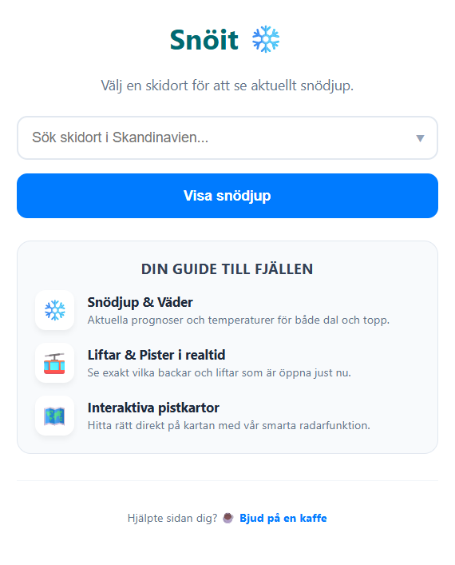

Snöit
Realtidsdata för skandinaviska skidorter

Att planera en skidresa kräver ofta att man hoppar mellan flera olika tunga hemsidor för att kolla väder, liftar och snödjup. Jag byggde Snöit för att lösa detta genom att samla all kritisk information i ett blixtsnabbt och mobiloptimerat gränssnitt.
Idén
Målet var att skapa en central knutpunkt för skidåkare. Istället för att navigera komplexa menyer på stora webbplatser får användaren allt på ett ställe genom ett enda klick, från aktuellt snödjup till exakta öppettider.
Hur det fungerar
Applikationen är en fullstack-lösning som kombinerar rå dataextraktion med moderna API-integrationer:
- Web Scraping (Node.js): Backend-servern skrapar Skistars officiella källor i realtid för att hämta aktuell liftstatus och pistat snödjup, information som ofta saknas i vanliga väder-API:er.
- API-integration (Open-Meteo): För att ge en komplett bild hämtar appen exakta väderprognoser för både dal- och toppnivå baserat på ortens specifika koordinater.
- Interaktiva Kartor: Genom ett anpassat koordinatsystem kan användaren klicka på en lift i listan och se dess exakta position direkt på pistkartan i fullskärmsläge.
Tekniska utmaningar jag löste
- Datastabilitet: Att förlita sig på scraping kräver robust felhantering. Jag implementerade ett caching-system som sparar säkerhetskopior av data för att garantera att appen fungerar även om källsidan tillfälligt ligger nere.
- Mobiloptimering: Att presentera mycket data på små skärmar krävde en avancerad CSS Grid-layout där snödata och klockslag automatiskt staplas vertikalt för maximal läsbarhet.
Resultat
Resultatet är en högpresterande webbapplikation (snoit.eu) med ett gratis SSL-certifikat och automatiserad deployment via Vercel. Appen hanterar dynamiskt olika orter och underområden, och levererar data som är både visuellt tilltalande och tekniskt korrekt.
💻 Tech Stack
- JavaScript (ES6+)
- Node.js & Express
- Web Scraping (Regex/Fetch)
- Open-Meteo API
- CSS Grid & Flexbox
- Vercel & Render (Deployment)